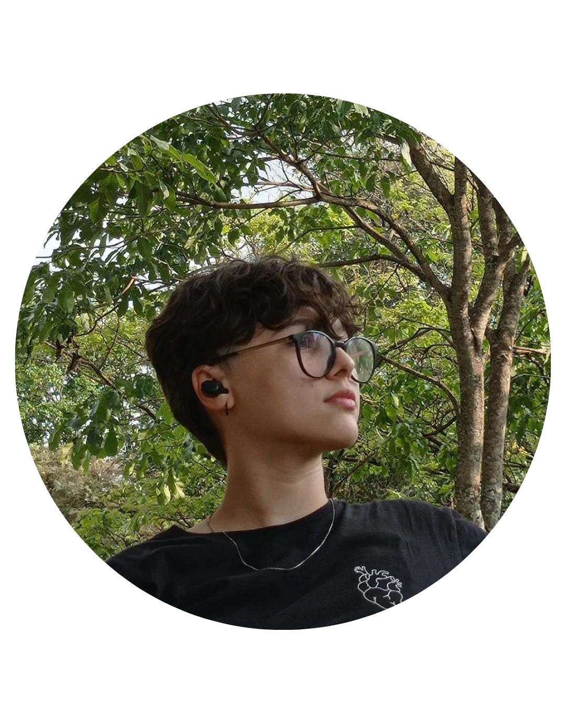

Olá, eu sou
Ana Bastos
Desenvolvedora de Software


Olá, eu sou
Ana Bastos
Desenvolvedora de Software
Conheça mais

6 meses como
Estagiária de TI

Técnicio de Informática - IFMS
Bacharel em Ciência da Computação - UFMS
(Em andamento - 2022 - 2026)
Cursei informática no meu ensino médio técnico no Instituto Federal do Mato Grosso do Sul no período de 2018 a 2021. Na instituição, participei de feiras de ciências, onde conquistei títulos, como: 2o lugar na Fecipan (Feira de Ciência e Tecnologia do Pantanal), nos anos de 2019 e 2021, e Lugar de finalista nas maiores feiras do país, a Febrace (Feira Brasileira de Ciências e Engenharias) e a MOSTRATEC. Minhas principais habilidades são atendimento ao público, programação em Python, Html, CSS e React. Estagiei durante 6 meses no Ministério Público de Mato Grosso do Sul, onde me aperfeiçoei no que diz respeito a relacionamento com cliente e auxiliar técnica na área de tecnologia. Atualmente, ingressei na Universidade do Mato Grosso do sul, onde curso Bacharelado em Ciência da Computação
Explore minhas